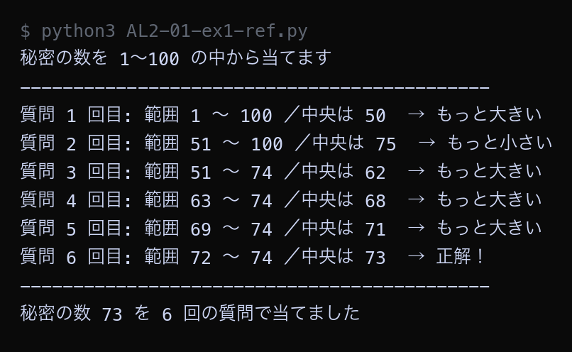
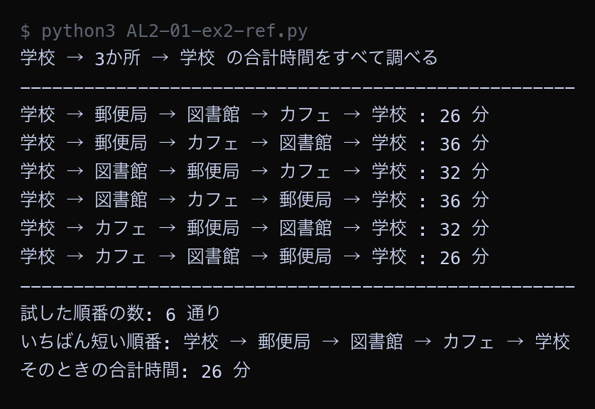

例題
例題1と例題2のコードを実行してください。まず作業フォルダを用意します。
VS Code でフォルダとファイルを用意する
Step 1: 作業フォルダを作る
- デスクトップに AL2 という名前のフォルダを作る（後期の授業ではずっと同じフォルダを使う）
- AL2 フォルダの中に No01 という名前のフォルダを作る
└── AL2/
└── No01/ ← 第1回はここに保存
Step 2: VS Code でフォルダを開く
- Visual Studio Code を起動する
- メニューから 「ファイル」→「フォルダーを開く」を選ぶ
- Step 1 で作った AL2/No01 フォルダを選んで開く
左側のエクスプローラーに No01 フォルダの中身が表示される（最初は空）。
Step 3: 例題ごとにファイルを作って実行する
- 左側エクスプローラーの No01 の横にある 新しいファイルアイコンをクリック
- ファイル名を入力して Enter（例題1なら
AL2-01-ex1.py） - 例題のコードブロック右上の コピーボタンをクリック
- VS Code の編集画面に 貼り付ける（Ctrl+V / Cmd+V）
- 保存する（Ctrl+S / Cmd+S）
- 右上の ▷（再生ボタン）をクリックして実行する
今回作るファイル（実践）: AL2-01-ex1.py, AL2-01-ex2.py。参考のコードを保存するときは、名前の最後に -ref を付ける
- 参考: コメントなしの完成したコード。まず読んで、全体の流れをつかむ
- 実践: アルゴリズムの要になる行が
____（穴）になっている。 丁寧なコメントと、コードの下の「ヒント」「候補」を見て、自分で埋めてから実行する
ファイル名は、参考が AL2-01-ex1-ref.py（ref = reference、参考）、
実践が AL2-01-ex1.py のように分けます（同じ名前にすると上書きされてしまうため）。
課題で使うのは実践のファイルです。
実行結果がページの画像と同じになれば正解です。ちがえば、どの穴がちがうかを考えて直します。
どうしても分からないときだけ、参考のコードと見比べてください。
今回のキーワード
| 用語 | 説明 |
|---|---|
| 最適化 | 考えられる選び方の中から、ある基準でいちばん良いものを1つ選ぶこと。後期の授業全体のテーマ。 |
| 全探索 | 考えられる候補をすべて書き出して1つずつ調べる方法。必ず正しい答えが出るが、候補が増えると時間がかかる。 |
| 二分探索 | 並んでいるデータの中央と比べ、外れた半分を捨てることをくり返す探し方。 |
| 幅優先探索 | スタートに近いマスから順に、しらみつぶしに調べていく探し方。まずスタートから1歩で行けるマスを全部調べ、次に2歩で行けるマスを全部調べ、次に3歩…と、同じ歩数のマスをまとめて調べ終えてから次の歩数へ進む。水面に石を落としたときの波紋のように、スタートを中心に輪が広がっていくイメージ。近い順に調べるので、ゴールに初めてたどり着いたときの歩数が、必ず最短の歩数になる。「これから調べる場所」を書き足したメモ（キュー）を、古いものから順に読んでいくことで実現する。 |
| 計算量 | データが増えたときに手数がどれくらい増えるかを表す目安。O(n) や O(log n) のように書く。この O は「オー」と読み、Order（オーダー: 規模・程度）の頭文字。O(n) は「データ数 n に比例する程度の手数」、O(log n) は「n が10倍になっても手数は少ししか増えない程度」を表す。細かい回数ではなく「n が増えたときの増え方の種類」だけを見るための書き方で、逐次探索は O(n)、二分探索は O(log n) になる。 |
数当てゲームをコンピュータに解かせる（二分探索の復習）
前期に学んだ二分探索を、数当てゲームの形で思い出します。 1から100までの中に「秘密の数」が1つあり、コンピュータが中央を聞く作戦で当てにいきます。
例題1（参考）── 完成したコード。コメントなしで全体の流れをつかむ。保存するなら AL2-01-ex1-ref.py の名前で
Python ── AL2-01-ex1-ref.py secret = 73 low = 1 high = 100 count = 0 print("秘密の数を 1〜100 の中から当てます") print("-" * 44) while low <= high: count = count + 1 middle = (low + high) // 2 print("質問", count, "回目: 範囲", low, "〜", high, "／中央は", middle, end=" ") if middle == secret: print("→ 正解！") break elif middle < secret: print("→ もっと大きい") low = middle + 1 else: print("→ もっと小さい") high = middle - 1 print("-" * 44) print("秘密の数", secret, "を", count, "回の質問で当てました")
▶ 実行結果

質問のたびに、探す範囲が 100個 → 50個 → 24個 → 12個 → 6個 → 3個 と、およそ半分ずつ減っています。1から100までの100個の中から、たった6回の質問で73を当てられました。「中央を聞いて、外れた半分を捨てる」という作戦が二分探索です。
例題1（実践）── 参考と同じ方法を別のデータで。要の行が ____ になっているので、コメントを読みながら埋めて、AL2-01-ex1.py の名前で保存して実行する
Python ── AL2-01-ex1.py # 数当てゲーム: コンピュータが「秘密の数」を当てる # 1 から 100 までの中に秘密の数が1つある。 # コンピュータは「中央を聞く」作戦で当てにいく。 # 「中央を聞いて、答えによって範囲を半分に減らす」をくり返す方法を # 二分探索という。前期に習った探索の復習。 # --- 準備: 変数を用意する --- # 変数 = 値に名前を付けて覚えておく箱。「名前 = 値」の形で作る secret = 41 # 秘密の数（あとで自由に変えてよい） low = 1 # 探す範囲の下限（いま「この数以上」と分かっている値） high = 100 # 探す範囲の上限（いま「この数以下」と分かっている値） count = 0 # 何回目の質問かを数える。最初は 0 回 # print() は () の中身を画面に表示する命令 print("秘密の数を 1〜100 の中から当てます") # 文字列 * 数 は、その文字列を数の回数だけくり返してつなげる # 例 "-" * 3 は "---" になる。ここでは区切り線を 44 個の - で引いている print("-" * 44) # --- 二分探索のくり返し --- # while は「条件が正しいあいだ、中の処理をくり返す」文 # low <= high は「探す範囲がまだ残っている」という意味。 # 範囲がなくなる（low が high を追いこす）と、くり返しが終わる while low <= high: count = count + 1 # 質問の回数を 1 増やす # // は「小数を切り捨てる割り算」。例 7 // 2 は 3（3.5 の小数を捨てる） # (low + high) // 2 で、範囲の中央の整数が求まる middle = ____ # ← 穴1 # print では , で区切ると、値のあいだに空白を入れて並べて表示できる # end=" " は「最後に改行せず、空白 2 つを付ける」という指定。 # こうすると、次の print の内容が同じ行の続きに表示される print("質問", count, "回目: 範囲", low, "〜", high, "／中央は", middle, end=" ") # if / elif / else は「条件によって処理を分ける」文 # == は「等しいか」を調べる。= （代入）とは別物なので注意 if middle == secret: print("→ 正解！") # break は「くり返しをその場でやめて、while の外に出る」命令 break # elif は「上の条件が違ったとき、次にこの条件を調べる」 elif middle < secret: print("→ もっと大きい") # 答えは中央より大きいので、中央より左（小さい側）はもう不要。 # 例 範囲 1〜100 で中央 50 が「もっと大きい」なら、次は 51〜100 ____ # ← 穴2 # else は「どの条件にも当てはまらなかったとき」 else: print("→ もっと小さい") # 答えは中央より小さいので、中央より右（大きい側）はもう不要。 # 例 範囲 51〜100 で中央 75 が「もっと小さい」なら、次は 51〜74 high = middle - 1 # 上限を下げて、左半分だけを残す # --- 結果の表示 --- print("-" * 44) # 100 個の数でも、範囲が半分ずつ減るので 7 回以内に必ず当たる print("秘密の数", secret, "を", count, "回の質問で当てました")
穴埋め（____ を埋めてから実行する）
| 穴 | ヒント | 候補（1つが正解） |
|---|---|---|
| 穴1 | low と high の中央の位置。整数になる割り算を使う | A. (low + high) / 2B. low + high // 2C. (low + high) // 2 |
| 穴2 | 中央より大きい側に答えがあるので、調べる範囲の下限を中央の1つ上にする | A. low = middle + 1B. high = middle - 1C. low = middle |
埋めたら保存して実行し、下の実行結果と同じになるか見比べる。ちがえば、どの穴がちがうかを考えて直す（上の「参考」のコードと見比べてもよい）。 答えは次回の授業の時刻に、ページのいちばん下の「解答例」に出ます。
▶ 実行結果

埋めて実行した結果が、この画像と同じになれば正解です。ちがうときは、どの穴がちがうかを考えて直してください。
全部の順番を試して、いちばん短いものを選ぶ（後期の予告）
後期のテーマである最適化を、いちばん小さな形で体験します。 学校を出発して3か所を回り、学校へ戻ります。回る順番は全部で6通りあり、順番によって合計時間が変わります。 6通りをすべて試して、いちばん短い順番を選びます。
例題2（参考）── 完成したコード。コメントなしで全体の流れをつかむ。保存するなら AL2-01-ex2-ref.py の名前で
Python ── AL2-01-ex2-ref.py travel_time = { ("学校", "郵便局"): 8, ("学校", "図書館"): 12, ("学校", "カフェ"): 5, ("郵便局", "図書館"): 6, ("郵便局", "カフェ"): 9, ("図書館", "カフェ"): 7, } def minutes_between(a, b): """2地点 a と b のあいだの移動時間（分）を返す 表には ("学校", "郵便局") のように片方向しか書いていないので、 (a, b) と (b, a) の両方をためす。 """ if (a, b) in travel_time: return travel_time[(a, b)] return travel_time[(b, a)] def total_minutes(route): """学校 → route の順に回る → 学校 に戻るまでの合計時間（分）を返す route = 回る順番を並べたリスト。例 ["郵便局", "図書館", "カフェ"] """ total = 0 place = "学校" for next_place in route: total = total + minutes_between(place, next_place) place = next_place total = total + minutes_between(place, "学校") return total all_routes = [ ["郵便局", "図書館", "カフェ"], ["郵便局", "カフェ", "図書館"], ["図書館", "郵便局", "カフェ"], ["図書館", "カフェ", "郵便局"], ["カフェ", "郵便局", "図書館"], ["カフェ", "図書館", "郵便局"], ] print("学校 → 3か所 → 学校 の合計時間をすべて調べる") print("-" * 52) best_route = None best_time = None for route in all_routes: minutes = total_minutes(route) print("学校 →", " → ".join(route), "→ 学校 :", minutes, "分") if best_time is None or minutes < best_time: best_time = minutes best_route = route print("-" * 52) print("試した順番の数:", len(all_routes), "通り") print("いちばん短い順番: 学校 →", " → ".join(best_route), "→ 学校") print("そのときの合計時間:", best_time, "分")
▶ 実行結果

6通りすべての合計時間が表示され、最短は26分でした。「学校 → 郵便局 → 図書館 → カフェ → 学校」と「学校 → カフェ → 図書館 → 郵便局 → 学校」の2つが同じ26分になっています。2つは進む向きが逆なだけで、通る道は同じだからです。すべての候補を書き出して比べる方法を全探索と呼びます。
例題2（実践）── 参考と同じ方法を別のデータで。要の行が ____ になっているので、コメントを読みながら埋めて、AL2-01-ex2.py の名前で保存して実行する
Python ── AL2-01-ex2.py # 後期のテーマ「最適化」の入口 # 学校を出発して3か所を回り、学校へ戻る。いちばん短い順番はどれか。 # 「考えられる順番を全部試して、いちばん良いものを選ぶ」やり方を # 全探索という。前期に習った探索の復習であり、 # 後期に学ぶ「最適化」のいちばん素朴な方法でもある。 # --- 移動時間の表 --- # 2地点のあいだの移動時間（分） # { キー: 値, ... } は辞書。キーから値を引ける表のようなデータ。 # ここではキーが ("学校", "郵便局") のようなタプル（2 つの値の組）、 # 値がその 2 地点のあいだの移動時間（分）。 # 例 travel_time[("学校", "郵便局")] と書くと 9 が取り出せる travel_time = { ("学校", "郵便局"): 9, ("学校", "図書館"): 5, ("学校", "カフェ"): 8, ("郵便局", "図書館"): 6, ("郵便局", "カフェ"): 4, ("図書館", "カフェ"): 12, } # def は「関数を作る」文。() の中の a, b が引数（関数に渡す値の受け取り口） def minutes_between(a, b): """2地点 a と b のあいだの移動時間（分）を返す 表には ("学校", "郵便局") のように片方向しか書いていないので、 (a, b) と (b, a) の両方をためす。 """ # 辞書の in は「そのキーが辞書にあるか」を調べる if (a, b) in travel_time: # return は「関数の答えを返して、関数を終える」命令 return travel_time[(a, b)] # 辞書[キー] で値を取り出す return travel_time[(b, a)] # 逆向きのキーで取り出す def total_minutes(route): """学校 → route の順に回る → 学校 に戻るまでの合計時間（分）を返す route = 回る順番を並べたリスト。例 ["郵便局", "図書館", "カフェ"] """ total = 0 # 合計時間。最初は 0 分 place = "学校" # いまいる場所。出発は学校 # for 変数 in リスト: は「リストの要素を先頭から順に取り出してくり返す」文 # next_place に "郵便局", "図書館", ... と、次に行く場所が順に入る for next_place in route: # いまの場所から次の場所までの時間を足す total = total + minutes_between(place, next_place) place = next_place # 移動したので、いまの場所を更新する total = total + ____ # ← 穴2 return total # --- 回る順番をすべて書き出す --- # 3か所を回る順番は、全部で 6 通りある。全部書き出して1つずつ試す。 # （最初に 3 通り、次に残り 2 通り、最後は 1 通りなので 3 × 2 × 1 = 6 通り） # [ [...], [...], ... ] は「リストの中にリストが入った」形。 # all_routes[0] が最初の順番 ["郵便局", "図書館", "カフェ"] になる all_routes = [ ["郵便局", "図書館", "カフェ"], ["郵便局", "カフェ", "図書館"], ["図書館", "郵便局", "カフェ"], ["図書館", "カフェ", "郵便局"], ["カフェ", "郵便局", "図書館"], ["カフェ", "図書館", "郵便局"], ] print("学校 → 3か所 → 学校 の合計時間をすべて調べる") print("-" * 52) # "-" を 52 個つなげた区切り線 # --- 全探索: 1つずつ試して、いちばん短いものを覚えておく --- # None は「まだ何もない」を表す特別な値。最初は最短の記録がないので None best_route = None # これまでにいちばん短かった順番 best_time = None # そのときの合計時間 for route in all_routes: # 6 通りの順番を 1 つずつ取り出す minutes = total_minutes(route) # 関数を呼び出して合計時間を計算する # " → ".join(リスト) は、リストの要素を " → " でつないだ文字列を作る # 例 " → ".join(["a", "b"]) は "a → b" print("学校 →", " → ".join(route), "→ 学校 :", minutes, "分") # is None は「まだ記録がない（最初の 1 回目）」という条件。 # or は「どちらか一方でも正しければ正しい」。 # 最初の 1 回目、または これまでの記録より短いときに、記録を更新する if best_time is None or ____: # ← 穴1 best_time = minutes best_route = route # --- 結果の表示 --- print("-" * 52) print("試した順番の数:", len(all_routes), "通り") print("いちばん短い順番: 学校 →", " → ".join(best_route), "→ 学校") print("そのときの合計時間:", best_time, "分")
穴埋め（____ を埋めてから実行する）
| 穴 | ヒント | 候補（1つが正解） |
|---|---|---|
| 穴1 | いま計算した合計時間が、これまでの最短より短いときだけ更新する | A. minutes == best_timeB. minutes > best_timeC. minutes < best_time |
| 穴2 | 最後の場所から学校へ戻る時間を足す | A. 0B. minutes_between(place, "学校")C. minutes_between("学校", route[0]) |
埋めたら保存して実行し、下の実行結果と同じになるか見比べる。ちがえば、どの穴がちがうかを考えて直す（上の「参考」のコードと見比べてもよい）。 答えは次回の授業の時刻に、ページのいちばん下の「解答例」に出ます。
▶ 実行結果

埋めて実行した結果が、この画像と同じになれば正解です。ちがうときは、どの穴がちがうかを考えて直してください。